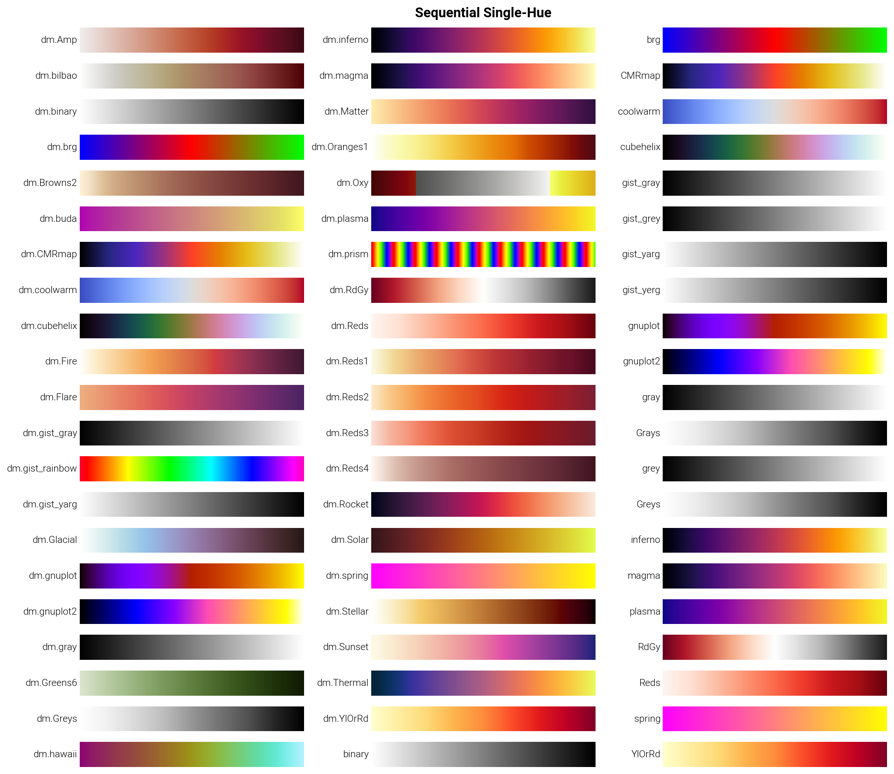
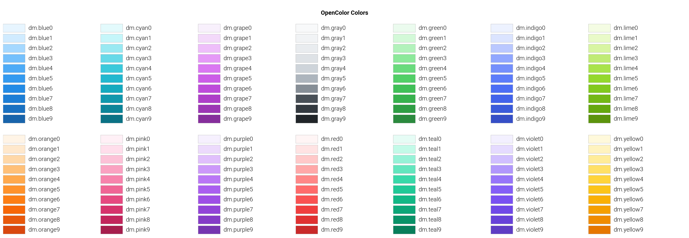
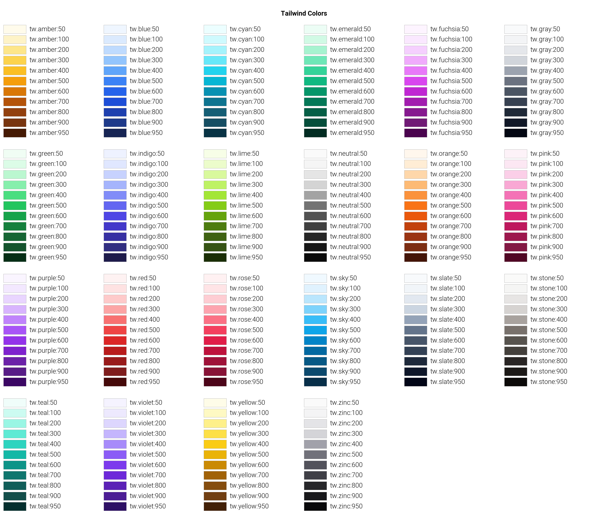
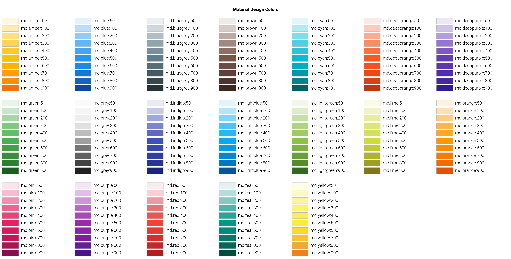
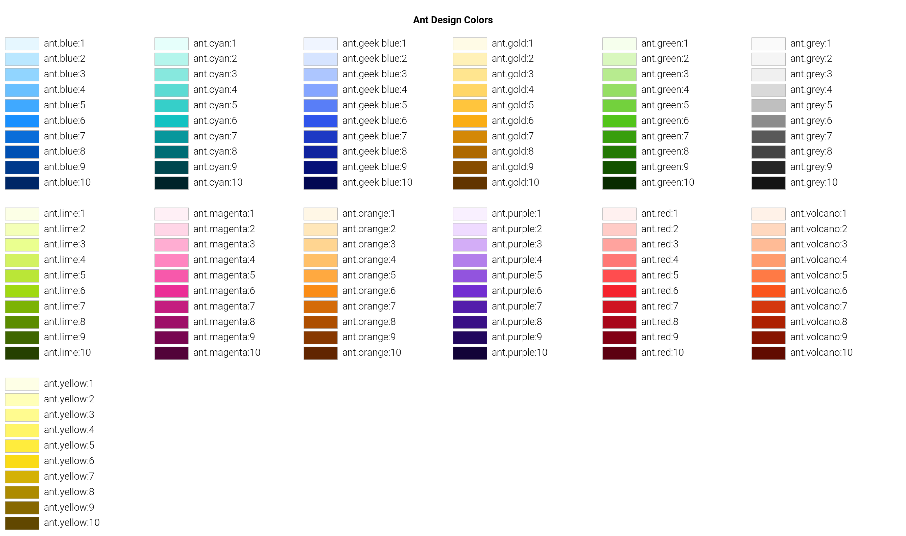
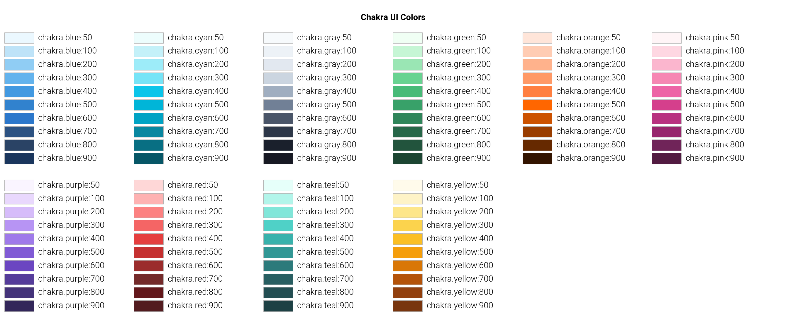
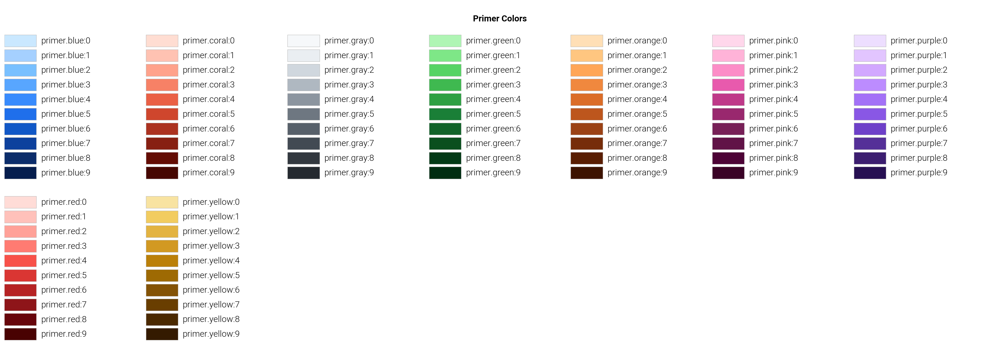
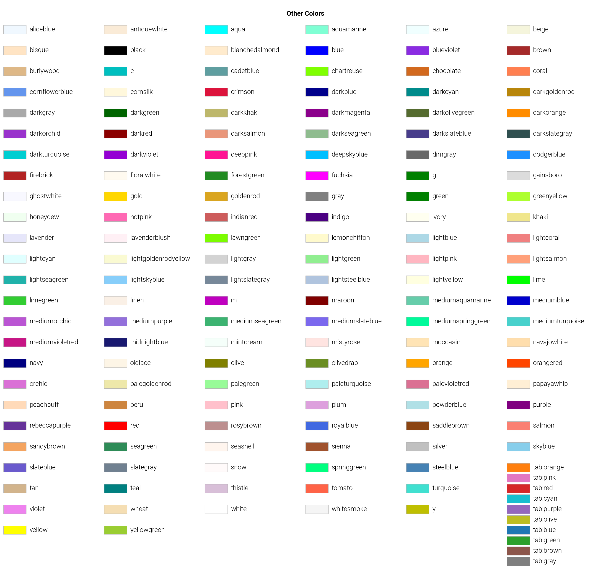

Color and Colormap Gallery¶
This document provides visual samples of all available colors and colormaps in dartwork-mpl. These images are generated from plot_colormaps() and plot_colors() functions.
Quick Start¶
dartwork-mpl provides a comprehensive color system with named colors from various design systems and a wide selection of colormaps for data visualization.
Colors can be used directly in matplotlib plotting functions by specifying color names (e.g., tw.blue:500, md.red:700). Colormaps are used with functions that map data values to colors (e.g., imshow(), contourf(), scatter() with c parameter). Add _r suffix to reverse any colormap (e.g., viridis_r).
Colormaps¶
Colormaps are organized by type. Each category shows all available colormaps with their names.
Sequential Single-Hue¶
Sequential colormaps that use a single hue with varying lightness. Best for representing ordered data that progresses from low to high values.
When to use:
Representing magnitude or intensity (e.g., temperature, density, concentration)
Data that has a natural ordering from low to high
When you want a clean, professional appearance

Sequential Multi-Hue¶
Sequential colormaps that use multiple hues. Provide more visual distinction than single-hue colormaps while maintaining the sequential nature.
When to use:
When you need more visual contrast than single-hue colormaps
Heatmaps and density plots
Scientific visualizations where color transitions are important
Popular choices:
viridis,plasma,inferno,magma

Diverging¶
Diverging colormaps that have distinct middle values and different colors at the ends. Ideal for data centered around a meaningful zero point or threshold.
When to use:
Data with a meaningful zero point (e.g., deviations from mean, temperature anomalies)
Correlation matrices
Data that diverges from a central value
When you need to highlight both positive and negative values

Cyclical¶
Cyclical colormaps that start and end with similar colors, suitable for periodic data where the highest and lowest values should appear similar.
When to use:
Periodic or circular data (e.g., angles, time of day, phase data)
Data where the endpoints are conceptually connected
Wind direction, wave phase, or any circular measurement

Categorical¶
Categorical colormaps with distinct colors for different categories. Use when you need to distinguish between discrete, unordered groups.
When to use:
Discrete categories without inherent ordering
Classifying data into distinct groups
Bar charts, pie charts, or scatter plots with categories
When each category should be visually distinct

Colors¶
Colors are organized by library. Each library shows all available named colors with their names.
OpenColor¶
OpenColor color palette. A carefully designed color system for user interfaces.
Available colors: Use dm.plot_colors() to see all available OpenColor colors.

Tailwind (tw)¶
Tailwind CSS color palette. Colors are named with the format tw.{color}:{weight} (e.g., tw.blue:500).
Available colors:
Colors: blue, gray, red, green, yellow, purple, pink, indigo, cyan, teal, emerald, lime, amber, orange, slate, zinc, neutral, stone, etc.
Weights: 50, 100, 200, 300, 400, 500, 600, 700, 800, 900, 950

Material Design (md)¶
Material Design color palette. Colors are named with the format md.{color}:{weight} (e.g., md.blue:500).
Available colors:
Colors: red, pink, purple, deep purple, indigo, blue, light blue, cyan, teal, green, light green, lime, yellow, amber, orange, deep orange, brown, grey, blue grey
Weights: 50, 100, 200, 300, 400, 500, 600, 700, 800, 900

Ant Design (ant)¶
Ant Design color palette. Colors are named with the format ant.{color}:{weight} (e.g., ant.blue:5).
Available colors:
Colors: red, volcano, orange, gold, yellow, lime, green, cyan, blue, geek blue, purple, magenta, grey
Weights: 1, 2, 3, 4, 5, 6, 7, 8, 9, 10

Chakra UI (chakra)¶
Chakra UI color palette. Colors are named with the format chakra.{color}:{weight} (e.g., chakra.blue:500).
Available colors:
Colors: red, orange, yellow, green, teal, blue, cyan, purple, pink, gray
Weights: 50, 100, 200, 300, 400, 500, 600, 700, 800, 900

Primer (primer)¶
Primer color palette. Colors are named with the format primer.{color}:{weight} (e.g., primer.blue:5).
Available colors:
Colors: blue, green, yellow, orange, red, purple, pink, coral, gray
Weights: 0, 1, 2, 3, 4, 5, 6, 7, 8, 9

Other Colors¶
Other named colors from matplotlib and dartwork-mpl. Includes standard matplotlib colors and custom dartwork-mpl colors.
Note: Standard matplotlib color cycle colors (C0, C1, C2, etc.) and other named colors are available.

XKCD Colors¶
XKCD color survey colors. These are named colors from the XKCD color survey, providing a wide range of intuitive color names.
Note: XKCD colors use the xkcd: prefix. Use dm.plot_colors() to see all available XKCD color names.

Best Practices¶
Choosing Colormaps¶
Sequential vs Diverging
Use sequential colormaps for data that progresses from low to high (e.g., temperature, density, counts)
Use diverging colormaps for data centered around a meaningful zero point (e.g., deviations, anomalies, correlations)
Use categorical colormaps for discrete, unordered categories
Color Accessibility
Avoid using color as the only way to convey information
Use colorblind-friendly colormaps (e.g.,
viridis,plasma,inferno) for scientific publicationsTest your visualizations with colorblind simulators if possible
Consider using patterns or textures in addition to color for accessibility
Perceptual Uniformity
Prefer perceptually uniform colormaps (e.g.,
viridis,plasma,inferno,magma) over traditional ones likejetPerceptually uniform colormaps ensure that equal steps in data correspond to equal steps in perceived color change
Reversing Colormaps
Use the
_rsuffix to reverse any colormap when neededSometimes reversing a colormap can better match your data or improve readability
Choosing Colors¶
Color Weights
Lower weights (50-300) are lighter colors, suitable for backgrounds or subtle elements
Middle weights (400-600) are balanced colors, good for primary elements
Higher weights (700-900) are darker colors, suitable for text or emphasis
Consistency
Stick to one color library within a single visualization for consistency
Use similar weights for similar elements (e.g., all primary lines use weight 500-600)
Contrast
Ensure sufficient contrast between foreground and background colors
Use darker colors for text and lighter colors for backgrounds
Mixing Colors
Use
dm.mix_colors()to create custom colors by blending existing onesUseful for creating gradients or intermediate shades
Regenerating Images¶
To regenerate these images, run the generate_gallery.py script:
python docs/generate_gallery.py
The script will generate PNG images in the docs/images/ directory. Make sure you have dartwork-mpl installed and all dependencies are available.